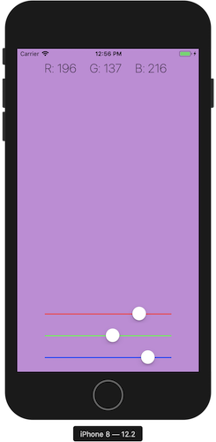
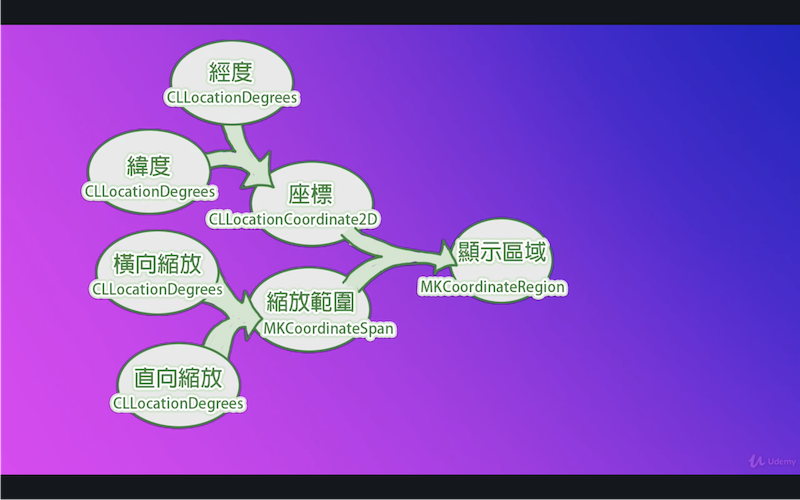

viewDidLoad() 是在畫面剛讀入時執行didReceiveMemoryWarning() 是在記憶體不夠時執行playground
變數宣告 var a = 5
常數宣告 let b = 2.5
變數/常數+型別
var age:Int = 4
var weight:Float = 66.6
let pi:Double = 3.14
浮點數
age / weight
//錯誤，整數不能直接除小數
Float(age) / weight
//須先轉型成Float，再做除法
5/2
// 2，整數除整數會無條件捨去到整數位
Double(5)/2
// 2.5，若要得到正確答案，須先轉型
布林值var isLocked:Bool = true
字串
var language:String = "swift"
let hello:String = "Hello"
hello + " " + language
//output: "hello swift"，連結字串用加號
var str = "my language is \(language)"
//output: "my language is swift"，也可以用\(變數)來加入字串
"my language is \"swift\""
//output: "my language is "swift""，若字串中有雙引號，要在雙引號前放上跳脫字元\
var str = "aAbBCc"
str.lowercased() //output: "aabbcc"
str.uppercased() //output: "AABBCC"
var str = """
a b c
d e f
g h i
"""
//output: "a b c\nd e f\ng h i"，多行字串用"""包起來
//索引值從0開始
var array:[String] = ["A","b","c","D","EF"]
//索引值 0 1 2 3 4
array[0] //output: "A"
array[3] //output: "D"
array[5] //錯誤，沒有5號元素
array.count //output: 5，計算陣列有多少成員
array.append("ghi") //array: ["A", "b", "c", "D", "EF", "ghi"]
// array.append():在陣列後面加入新成員
array.insert("new", at: 3)
// array: ["A", "b", "c","new", "D", "EF", "ghi"]
// array.insert():在指定位址插入新成員
array.remove(at: 2)
// array: ["A", "b", "new", "D", "EF", "ghi"]
// array.remove():刪除指定位置的成員
array.removeLast()
// array: ["A", "b", "new", "D", "EF"]
// array.removeLast():刪除最後一個元素
array.removeFirst()
// array: ["b", "new", "D", "EF"]
// array.removeFirst():刪除第一個元素
array.append(1)
//錯誤，array只能存放同一型別的成員
array.reverse()
// array: ["EF", "D", "new", "b"]
// array.reverse():將array反轉
var array2:[String] = ["1","2","3"]
array = array + array2
// array: ["EF", "D", "new", "b", "1", "2", "3"]
// array加法：把兩個陣列連起來
//建立空陣列的方法
var array:[Int] = []
var array2 = [Int]()
var e2c:[String:String] = ["one":"一","two":"二","three":"三"]
// 鍵值對格式：key:value，每組鍵值對間用逗號隔開
e2c["one"] // output: "一"
e2c["three"] // output: "三"
e2c["two"] // output: "二"
e2c["ten"] // output: nil
// 用不存在的key取值會得到nil
// 更新value的方法
e2c["one"] = "壹"
// e2c: ["one": "壹", "two": "二", "three": "三"]
e2c.updateValue("一", forKey: "one")
// e2c: ["one": "一", "two": "二", "three": "三"]
// 加入新的鍵值對
e2c["four"] = "四"
e2c.updateValue("五", forKey: "five")
// e2c: ["one": "一", "three": "三", "four": "四", "five": "五", "two": "二"]
// 刪除鍵值對
e2c["five"] = nil; // nil代表空
e2c.removeValue(forKey: "four")
// e2c: ["one": "一", "two": "二", "three": "三"]
var price = 80;
if price < 70{
print("Very cheap")
} else if price > 130{
print("Are you crazy?")
} else {
print("buy it")
}
// && : 且， || : 或
var price = 80
switch price {
case 20...40:
print("cheap")
case 70,80,90:
print("ok")
case 200:
print("expensive")
default:
print("???")
}
// default不可省略
// 20...40 是指20到40都會進入這個case
// 70,80,90 是指70,80,90這三個會進入這個case
// 取亂數
import GameKit
var answer:Int = GKRandomSource.sharedRandom().nextInt(upperBound: 100)+1
// 修改StatusBarStyle
override var preferredStatusBarStyle: UIStatusBarStyle{
return .lightContent
}
// 修改背景圖
@IBOutlet weak var background: UIImageView!
background.image = UIImage(named: "Finish")
// 修改messageLabel.text
messageLabel.text = "Guess a number between \(min) to \(max)"
// 格式
for 自己設定的名字 in 陣列的名字{
// 要執行的程式碼
}
let array:[Int] = [1,2,3,4,5]
for i in array{
print(i)
}
// output: "1\n2\n3\n4\n5\n"
var array2:[Int] = []
for i in array{
array2.append(i+2)
}
// array2: [3, 4, 5, 6, 7]
let strArr:[String] = ["Acs","CcC","ewf","cAc"]
var strArr2:[String] = []
for str in strArr{
strArr2.append(str.lowercased())
}
// output: ["acs", "ccc", "ewf", "cac"]
// 全閉範圍區間 1...5 指的是 (1,2,3,4,5)
// 半壁範圍區間 1..<5 指的是 (1,2,3,4)
for index in 1...100{
print(index)
}
// 從1印到100
// 若for 中用不到index 可將index改為_
for _ in 1...3{
print("HI")
}
// 迴圈做3次
// 九九乘法表
for num1 in 1..<10{
for num2 in 1..<10{
print("\(num1) * \(num2) = \(num1*num2)")
}
}
for index in 1...10 where index%2 == 1{
print(index)
}
// output: "1\n3\n5\n7\n9\n"
// for + dictionary
let e2c:[String:String] = ["one":"一","two":"二","three":"三"]
for (key,value) in e2c{
print("\(key):\(value)")
}
// output: "three:三\ntwo:二\none:一\n"
// (key,value) : 稱為元組(tuple)，把很多資料用小括號包起來
let colors = ("red","orange","yellow","green")
// 元組用 colors.0 的方式存取
// tuple 中可存不同型別
let tuple = ("a",12,true,3.14,[1,2,3])
let e2c = (one:"一",two:"二",three:"三")
e2c.one // output: "一"
e2c.0 // output: "一"
var index = 1
while index <= 10 {
print(index)
index += 1
}
// while + array
let array:[Int] = [1,2,3,4,5]
var index = 0
while index < array.count{
print(array[index])
index += 1
}
// repeat-while
repeat{
print("just do it \(index) times.")
index += 1
}while index < 11
// 從1印到10
// repeat-while 即使條件不符合，最少會執行一次，類似其他的do-while
// 定義函式 : 函式還不會執行
func functionName(parameter){
// 會需要重複做的事情
}
// 呼叫函式 ： 函式執行
functionName(parameter)
func eat(foodName:String){
print("eat "+foodName)
}
eat(foodName: "hamburger")
// output: eat hamburger
eat(foodName: "pizza")
// output: eat pizza
// 有回傳值的函式
func add(num1:Int,num2:Int) -> Int{
return num1 + num2
}
let ans = add(num1: 2, num2: 6)
// 沒有回傳值的寫法
func functionName(parameter){
}
func functionName(parameter) -> Void{
}
func functionName(parameter) -> (){
}
// 外部參數名： withWidth、andHeight
// 內部參數名： width、height
func calculateArea(withWidth width:Float, andHeight height:Float) -> Float{
return width * height
}
calculateArea(withWidth: 12.3, andHeight: 45.6)
// 省略外部參數名
func buy(_ thing:String){
print("buy "+thing)
}
buy("macbook")
var a:Int = 10
if true{
print(a)
}
// output: 10
if true{
let i = 12
}
print(i)
// output: 5
let i = 5
if true{
let i = 12
}
print(i)
// output: 5
let helloClosure = {
print("hello")
}
helloClosure()
let add = {
(num1:Int,num2:Int) -> Int in
return num1 + num2
}
add(3,5)
// closure也有型別
// helloClosure 的型別是()->()
// add 的型別是(Int,Int)->Int
func calculate(num1:Int,num2:Int,operation:(Int,Int)->Int){
print(operation(num1,num2))
}
let add = {
(num1:Int,num2:Int) -> Int in
return num1 + num2
}
calculate(num1: 3, num2: 4, operation: add)
// before
let add = {
(num1:Int,num2:Int) -> Int in
return num1 + num2
}
// after
let add:(Int,Int)->Int = {
(num1,num2) in
return num1 + num2
}
return// before
let add:(Int,Int)->Int = {
(num1,num2) in
return num1 + num2
}
// after
let add:(Int,Int)->Int = {
(num1,num2) in num1 + num2
}
$0,$1,$2...代替傳進來的參數名稱// before
let add:(Int,Int)->Int = {
(num1,num2) in num1 + num2
}
// after
let add:(Int,Int)->Int = { $0 + $1 }
// before
let numberArrayAddTen = numberArray.map({ $0+10 })
// after
let numberArrayAddTen = numberArray.map(){ $0+10 }
// before
let numberArrayAddTen = numberArray.map(){ $0+10 }
// after
let numberArrayAddTen = numberArray.map{ $0+10 }
var numberArray=[1,3,5,7,9,2,4,6,8,10]
let numberArrayAddTen = numberArray.map {$0 + 10}
}
// output: [11,13,15,17,19,12,14,16,18,20]
var numberArray=[1,3,5,7,9,2,4,6,8,10]
let numberArrayEven = numberArray.filter {$0 % 2 == 0}
// output: [2, 4, 6, 8, 10]
var i:Int = 10
// i的型別是Int，儲存10
var j:Int = nil
// error: j的型別是Int，無法儲存nil
var k:Int? = nil
// 為了儲存nil和Int，必須使用optional Int型別(Int?)
var isLightOn:Bool? = nil;
// 為了儲存nil和Bool，必須使用optional Bool型別(Int?)
var x:Int?
// x預設為nil
var y:Int? = 8;
print(y)
// output: optional(8)
y+2
// error: optional Int 和 Int無法相加
var z:Int!;
// 除了用Int?表示optional外，也可用Int!表示
// 用Int!在程式中，都不會檢查值是否為nil，類似其他語言
// 在變數後加上!可以強迫解開包裝
var x:Int? = 8
x! + 2
// output: 10
var y:Int? = nil
y! + 2
// error
var x:Int? = 8;
if x != nil{
x! + 2
// output: 10
x = x! + 2
// x: optional(10)
}
var x:Int? = 8;
if let myNumber = x{
myNumber + 2
}
var x:Int? = 3
var y:Int
y = x != nil ? x! : 0
//等價於下面
if x != nil{
y = x!
} else {
y = 0
}
var x:Int? = 3
var y:Int
y = x ?? 0
//等價於下面
if x != nil{
y = x!
} else {
y = 0
}
let inputNumber:Int = 18
var isPrime:Bool? = true
if inputNumber <= 0 {
isPrime = nil
} else if inputNumber == 1{
isPrime = true
} else {
for i in 2..<inputNumber{
if(inputNumber % i == 0) {
isPrime = false
}
}
}
if isPrime == true {
print("\(inputNumber) is prime")
} else if isPrime == false{
print("\(inputNumber) isn't prime")
} else {
print("reenter")
}
// 函數寫法
func checkPrime(withNumber testNumber:Int) -> String{
var isPrime:Bool? = true
if testNumber <= 0 {
isPrime = nil
} else if testNumber == 1{
isPrime = true
} else {
for i in 2..<testNumber{
if(testNumber % i == 0) {
isPrime = false
}
}
}
if isPrime == true {
return "\(testNumber) is prime"
} else if isPrime == false{
return "\(testNumber) isn't prime"
} else {
return "reenter"
}
}
print(checkPrime(withNumber: inputNumber))
@IBaction interface builder ActioninputTextField.becomeFirstResponder()import UIKit
class ViewController: UIViewController {
@IBOutlet weak var inputTextField: UITextField!
@IBOutlet weak var resultLabel: UILabel!
override var preferredStatusBarStyle: UIStatusBarStyle{
return .lightContent
}
@IBAction func doThePrimeTest(_ sender: UIButton) {
// 1.把文字輸入框的文字拿出
if let inputText = inputTextField.text, let inputNumber = Int(inputText){
// 3.用checkPrime()得到輸出的字串
// 4.用resultLabel顯示結果
checkPrime(withNumber: inputNumber){
self.resultLabel.text = $0
self.resultLabel.isHidden = false
}
}
inputTextField.text = ""
}
override func viewDidLoad() {
super.viewDidLoad()
// Do any additional setup after loading the view.
// push the keyboard on
inputTextField.becomeFirstResponder()
}
func checkPrime(withNumber testNumber:Int) -> String{
var isPrime:Bool? = true
if testNumber <= 0 {
isPrime = nil
} else if testNumber == 1{
isPrime = true
} else {
for i in 2..<testNumber{
if(testNumber % i == 0) {
isPrime = false
break
}
}
}
if isPrime == true {
return "\(testNumber) is prime"
} else if isPrime == false{
return "\(testNumber) isn't prime"
} else {
return "reenter"
}
}
func checkPrime(withNumber number:Int,andCompletionHandler handler: (String)->()){
handler(checkPrime(withNumber: number))
}
}
// Lego類別，可想成是製造物件的藍圖
// 類別名稱第1個字通常用大寫
class Lego{
// 物件有的屬性(property)，描述物件的特性
var color = "blue"
var size = 8;
// 物件的方法，描述物件會做的事
func connect() {
print("connect with another block")
}
func remove() {
print("disconnect with another block")
}
}
let oneBlock = Lego()
// Lego() : 建立樂高物件
oneBlock.color
oneBlock.size
// 存取oneBlock這塊樂高的屬性
class Baby {
var name:String = "Tom"
var age:Int = 1
func sleep(){
print("sleep")
}
func introduceSelf(){
print("My name is \(name)")
}
}
let baby1 = Baby()
let baby2 = Baby()
baby2.name = "Nancy"
baby1.introduceSelf()
// output: My name is Tom
baby2.introduceSelf()
// output: My name is Nancy
// 每個不同的物件是相互獨立的
class Baby {
var name:String
var age:Int
init(){
// 要先初始化屬性，才能呼叫方法
name = "Tom"
age = 1
introduceSelf()
}
init(name:String){
self.name = name
age = 2;
introduceSelf()
}
init(age:Int){
name = "Sophie"
self.age = age
introduceSelf()
}
init(name:String, age:Int) {
self.name = name
self.age = age
introduceSelf()
}
func sleep(){
print("sleep")
}
func introduceSelf(){
print("My name is \(name).I am \(age) years old")
}
}
let baby1 = Baby()
let baby2 = Baby(name: "Ian")
let baby3 = Baby(age: 3)
let baby4 = Baby(name: "Eric", age: 2)
// output:
// My name is Tom.I am 1 years old
// My name is Ian.I am 2 years old
// My name is Sophie.I am 3 years old
// My name is Eric.I am 2 years old
class Baby {
var name:String
var age:Int
init(){
// 要先初始化屬性，才能呼叫方法
name = "Tom"
age = 1
introduceSelf()
}
init(name:String){
self.name = name
age = 2;
introduceSelf()
}
init(age:Int){
name = "Sophie"
self.age = age
introduceSelf()
}
init(name:String, age:Int) {
self.name = name
self.age = age
introduceSelf()
}
func sleep(){
print("sleep")
}
func introduceSelf(){
print("My name is \(name).I am \(age) years old")
}
}
// CuteBaby 繼承 Baby
class CuteBaby:Baby{
var nickname:String
func danceAndSing(){
print("Dance and sing.")
}
// 覆寫 Baby 的 sleep()
override func sleep() {
print("sleep with cute smile")
super.sleep()
}
// 覆寫 Baby 的 introduceSelf()
override func introduceSelf() {
print("My name ia \(nickname)")
}
// 覆寫 init() 順序
// 1. 初始化子類別屬性
// 2. super.init()
// 3. 設定父類別屬性
override init() {
nickname = "QQ"
super.init()
name = "Sunny"
}
}
let iAmSoQ = CuteBaby()
iAmSoQ.name
iAmSoQ.nickname
iAmSoQ.sleep()
// output:
// My name ia QQ
// sleep with cute smile
// sleep
deinit()釋放記憶體class Person{
var firstName = "Ian"
var lastName = "Lu"
var fullName:String
init() {
fullName = firstName+lastName;
print("A person is being initialized")
}
deinit {
print("A person is being deinitialized")
}
}
var person1:Person? = Person();
// 小括號的完整意義
// 1. 啟動一塊記憶體
// 2. 然後執行init()方法
person1?.fullName
// 當person實體不在被人需要會執行deinit()方法，回收記憶體
// person1 = nil
// person1 和 person2 參考同一段記憶體
var person2:Person? = person1
person1?.firstName = "Wei"
// person1?.firstName : "Wei"
// person2?.firstName : "Wei"
var number1 = 1
var number2 = number1
number1 = 10
// number1 : 10
// number2 : 1
person2 = nil
// 現在還有person1 參考這段記憶體，所以不會執行deinit()方法
person1 = nil
// 當person1不在參考這段記憶體，就沒有其他變數會參考這段記憶體了，所以此時會執行deinit()方法，回收記憶體
class Person{
var heart:Heart?
init() {
print("A person is being initialized")
}
deinit {
print("A person is being deinitialized")
}
}
class Heart{
var person:Person?
init() {
print("A heart is being initialized")
}
deinit {
print("A heart is being deinitialized")
}
}
var aPerson:Person? = Person()
var aHeart:Heart? = Heart()
//-------------
aPerson = nil
aHeart = nil
//output:
//A person is being initialized
//A heart is being initialized
//A person is being deinitialized
//A heart is being deinitialized
//-------------
//------------retain cycle
aPerson?.heart = aHeart
aHeart?.person = aPerson
aPerson = nil
// 由於aHeart.person仍在使用所以不會釋放
aHeart = nil
// output:
//A person is being initialized
//A heart is being initialized
//-------------
class Person{
weak var heart:Heart?
init() {
print("A person is being initialized")
}
deinit {
print("A person is being deinitialized")
}
}
class Heart{
weak var person:Person?
init() {
print("A heart is being initialized")
}
deinit {
print("A heart is being deinitialized")
}
}
var aPerson:Person? = Person()
var aHeart:Heart? = Heart()
aPerson?.heart = aHeart
aHeart?.person = aPerson
aPerson = nil
aHeart = nil
// output:
//A person is being initialized
//A heart is being initialized
//A person is being deinitialized
//A heart is being deinitialized
backgroundColoralphaisHiddenaddSubView()class ViewController: UIViewController {
@IBOutlet weak var midRect: UIView!
override func viewDidLoad() {
super.viewDidLoad()
// Do any additional setup after loading the view.
// 調整背景色
midRect.backgroundColor = UIColor.green
// 調整透明度
midRect.alpha = 0.5
// 隱藏midRect
// midRect.isHidden = true
// optional chaining
// view.viewWithTag(101)?.backgroundColor = UIColor.lightGray
// 自己加入UIView
let viewArea = CGRect(x: 50, y: 400, width: 100, height: 50)
let smallRect = UIView(frame: viewArea)
smallRect.backgroundColor = UIColor.purple
// 將自己做的UIView加入self.view的subView
// view.addSubview(smallRect)
// 不一定要加入self.view的subView，也可以加入其他UIView的subView，如下
view.viewWithTag(101)?.addSubview(smallRect)
}
}
UISwitch
class ViewController: UIViewController {
@IBOutlet weak var mySwitch: UISwitch!
@IBAction func makeAChange(_ sender: UISwitch) {
if sender.isOn==true{
print("isON")
view.backgroundColor = .white
} else {
print("isOFF")
view.backgroundColor = .black
}
}
@objc func codeSwitchChanged(_ sender: UISwitch) {
if sender.isOn==true{
print("isON")
view.backgroundColor = .white
} else {
print("isOFF")
view.backgroundColor = .black
}
}
override func viewDidLoad() {
super.viewDidLoad()
mySwitch.isOn = false
makeAChange(mySwitch)
// generate a UISwitch using code
let callSwitch = UISwitch(frame: CGRect(x: view.frame.midX-51/2, y: view.frame.maxY-100, width: 51, height: 31))
view.addSubview(callSwitch)
callSwitch.isOn = true;
callSwitch.addTarget(self, action: #selector(ViewController.codeSwitchChanged(_:)), for: .valueChanged)
}
}
UISegmentedControl
class ViewController: UIViewController {
@IBAction func colorToggleChanged(_ sender: UISegmentedControl) {
if sender.selectedSegmentIndex == 0{
view.backgroundColor = .white
} else if sender.selectedSegmentIndex == 1{
view.backgroundColor = .black
} else if sender.selectedSegmentIndex == 2{
view.backgroundColor = .red
} else if sender.selectedSegmentIndex == 3{
view.backgroundColor = .orange
} else if sender.selectedSegmentIndex == 4{
view.backgroundColor = .yellow
} else {
}
}
@IBAction func myToggleChanged(_ sender: UISegmentedControl) {
if sender.selectedSegmentIndex == 0{
print("public")
} else if sender.selectedSegmentIndex == 1{
print("private")
}
}
override func viewDidLoad() {
super.viewDidLoad()
// Do any additional setup after loading the view.
}
}
UISlider
class ViewController: UIViewController {
@IBOutlet weak var myLabel: UILabel!
@IBAction func sliderChanged(_ sender: UISlider) {
myLabel.text = "\(Int(sender.value))"
}
override func viewDidLoad() {
super.viewDidLoad()
// Do any additional setup after loading the view.
}
}
auto layout 自動排版
APP:color finder
class ViewController: UIViewController {
var redValue = 255
var greenValue = 255
var blueValue = 255
@IBOutlet weak var redText: UILabel!
@IBOutlet weak var greenText: UILabel!
@IBOutlet weak var blueText: UILabel!
@IBAction func redSliderChanged(_ sender: UISlider) {
redValue = Int(sender.value)
redText.text = "R: \(redValue)"
changeBackgroundColor()
}
@IBAction func greenSliderChanged(_ sender: UISlider) {
greenValue = Int(sender.value)
greenText.text = "G: \(greenValue)"
changeBackgroundColor()
}
@IBAction func blueSliderChanged(_ sender: UISlider) {
blueValue = Int(sender.value)
blueText.text = "B: \(blueValue)"
changeBackgroundColor()
}
func changeBackgroundColor() {
view.backgroundColor = UIColor(red: CGFloat(redValue)/255, green: CGFloat(greenValue)/255, blue: CGFloat(blueValue)/255, alpha: 1)
}
override func viewDidLoad() {
super.viewDidLoad()
// Do any additional setup after loading the view.
}
}

作品截圖

@IBAction func showAlert(_ sender: UIButton) {
let myAlert = UIAlertController(title: "Hello", message: "How are you", preferredStyle: .alert)
let okAction = UIAlertAction(title: "OK", style: .default) {
(action:UIAlertAction) in
// 關閉畫面
self.dismiss(animated: true, completion: nil)
}
// 如果只要self.dismiss()可以簡寫如下
// let okAction = UIAlertAction(title: "OK", style: .default)
let helloAction = UIAlertAction(title: "Say Hello", style: .destructive) {
(action:UIAlertAction) in
print("Hello")
self.dismiss(animated: true, completion: nil)
}
let cancelAction = UIAlertAction(title: "cancel", style: .cancel) {
(action:UIAlertAction) in
print("cancel")
self.dismiss(animated: true, completion: nil)
}
// 將按鈕加入UIAlertController
myAlert.addAction(okAction)
myAlert.addAction(helloAction)
myAlert.addAction(cancelAction)
// 彈出UIAlertController
present(myAlert, animated: true, completion: nil)
}
myPet.image = UIImage(named: "MyDog")
// 做一個system style 的 UIButton
let newButton = UIButton(type: .system)
// 設定按鈕的 x,y,width,height
newButton.frame = CGRect(x: 50, y: 50, width: 100, height: 50)
// 設定按鈕各個狀態的文字
newButton.setTitle("Press", for: .normal)
newButton.setTitle("Pressing", for: .highlighted)
// 將按鈕加到view
view.addSubview(newButton)
// 新增按鈕的事件
newButton.addTarget(self, action: #selector(ViewController.hitMe(_:)), for: .touchUpInside)
// 做一個image button
let anotherButton = UIButton(type: .custom)
anotherButton.frame = CGRect(x: 200, y: 200, width: 144, height: 54)
// 設定按鈕各個狀態的圖片
anotherButton.setImage(UIImage(named: "PlayButton"), for: .normal)
anotherButton.setImage(UIImage(named: "PlayButtonPressed"), for: .highlighted)
view.addSubview(anotherButton)
anotherButton.addTarget(self, action: #selector(ViewController.hitMe(_:)), for: .touchUpInside)
// 好處：縮短 viewDidLoad() 的程式
let codeButton:UIButton = {
// 做一個system style 的 UIButton
let newButton = UIButton(type: .system)
// 設定按鈕的 x,y,width,height
newButton.frame = CGRect(x: 300, y: 50, width: 100, height: 50)
// 設定按鈕各個狀態的文字
newButton.setTitle("A", for: .normal)
newButton.setTitle("B", for: .highlighted)
// 新增按鈕的事件
newButton.addTarget(self, action: #selector(ViewController.hitMe(_:)), for: .touchUpInside)
return newButton
}()
override func viewDidLoad() {
super.viewDidLoad()
view.addSubview(codeButton)
}
UIImageView
UIView
UIImageView
UIView
UIButton
import UIKit
import GameKit
import AudioToolbox
class ViewController: UIViewController {
override var prefersStatusBarHidden: Bool{
return true
}
@IBOutlet weak var yourFortune: UIImageView!
@IBAction func tellMeSomething(_ sender: UIButton) {
if yourFortune.isHidden == true {
showAnswer()
} else {
// 隱藏圖片
yourFortune.isHidden = true;
}
}
override func motionEnded(_ motion: UIEvent.EventSubtype, with event: UIEvent?) {
// 如果搖晃手機執行
if event?.subtype == .motionShake {
showAnswer()
}
}
func showAnswer() {
// 做一個1到6的亂數
let answer = GKRandomSource.sharedRandom().nextInt(upperBound: 6)+1
// 換圖
yourFortune.image = UIImage(named: "\(answer)")
yourFortune.isHidden = false
// 播放音效
AudioServicesPlaySystemSound(1000)
}
override func viewDidLoad() {
super.viewDidLoad()
// Do any additional setup after loading the view.
}
}

main.storyboard連結PickerView的datasource和delegate到ViewControllerViewController.swift加入以下協定UIPickerViewDataSource和UIPickerViewDelegateclass ViewController: UIViewController,UIPickerViewDataSource,UIPickerViewDelegate {
let numberArray = ["1","2","3","4","5","7","8"]
let fruitArray = ["apple","banana","mango","watermalon"]
// 設定有幾個component
func numberOfComponents(in pickerView: UIPickerView) -> Int {
// how many component in picker view
return 2
}
// 設定有每個component有幾個row
func pickerView(_ pickerView: UIPickerView, numberOfRowsInComponent component: Int) -> Int {
if component == 0 {
return numberArray.count
} else {
return fruitArray.count
}
}
// 設定每個欄位的title
func pickerView(_ pickerView: UIPickerView, titleForRow row: Int, forComponent component: Int) -> String? {
if component == 0 {
return numberArray[row]
} else {
return fruitArray[row]
}
}
// 設定選擇這個component這個row要做的事情
func pickerView(_ pickerView: UIPickerView, didSelectRow row: Int, inComponent component: Int) {
if component == 0{
print("number: \(numberArray[row])")
} else {
print("fruit: \(fruitArray[row])")
}
}
override func viewDidLoad() {
super.viewDidLoad()
// Do any additional setup after loading the view.
}
}
protocol SoyMilkGetable {
func giveMeSoyMilk()
}
class Brunch:SoyMilkGetable{
func giveMeSoyMilk() {
print("Soy Milk")
}
}
let aBrunch = Brunch()
aBrunch.giveMeSoyMilk()
protocol MoneyTransferProtocol {
func giveMoney()
}
class RichPeople:MoneyTransferProtocol{
func giveMoney() {
print("Give you 100 dollars")
}
}
class PoorGuy {
var helper:MoneyTransferProtocol?
func needMoney(){
helper?.giveMoney()
}
}
class NormalPeople:MoneyTransferProtocol{
func giveMoney() {
print("Give you 10 dollars")
}
}
let aPoorGuy = PoorGuy()
let aRichPeople = RichPeople()
let aNormalPeople = NormalPeople()
aPoorGuy.helper = aNormalPeople
aPoorGuy.needMoney()
protocol PickerViewDataSource{
func howManyComponent()
func howManyRow()
}
protocol PickerViewDelegate {
func titleToShow()
func didSelect()
}
class ViewController:PickerViewDataSource,PickerViewDelegate{
func howManyComponent() {
print("2")
}
func howManyRow() {
print("10")
}
func titleToShow() {
print("Hello")
}
func didSelect() {
print("Select")
}
}
class PickerView {
var dataSource:PickerViewDataSource?
var delegate:PickerViewDelegate?
func howManyComponentIhave() {
dataSource?.howManyComponent()
}
func howManyRowIhave() {
dataSource?.howManyRow()
}
func whatToShow() {
delegate?.titleToShow()
}
func afterSelect() {
delegate?.didSelect()
}
}
let aPickerView = PickerView()
let aViewController = ViewController()
aPickerView.dataSource = aViewController
aPickerView.delegate = aViewController
aPickerView.howManyComponentIhave()
aPickerView.howManyRowIhave()
aPickerView.whatToShow()
aPickerView.afterSelect()
// protocol oriented programming
protocol ManKindType{
var health:Int{ get set }
}
protocol Attackable {
func attack(target:Hurtable)
}
protocol Hurtable:ManKindType {
func getHurt()
}
class Man:ManKindType,Hurtable{
var health:Int
init(){
health = 10
}
func getHurt() {
health -= 10
}
}
class BatMan:ManKindType,Hurtable,Attackable{
var health: Int
init(){
health = 1000
}
func getHurt() {
health -= 5
}
func attack(target:Hurtable) {
print("attack with fist")
target.getHurt()
}
}
class SuperMan:ManKindType,Hurtable,Attackable{
var health: Int
init() {
health = 10000
}
func getHurt() {
health -= 1
}
func attack(target:Hurtable) {
print("attack with eye laser")
target.getHurt()
}
}
// object oriented programming
class Man{
var health:Int
init(){
health = 10
}
func getHurt() {
health -= 10
}
}
class BatMan:Man{
override init(){
super.init()
health = 1000
}
override func getHurt() {
health -= 5
}
func attack() {
print("attack with fist")
}
}
class SuperMan:Man{
override init() {
super.init()
health = 10000
}
override func getHurt() {
health -= 1
}
func attack() {
print("attack with eye laser")
}
}
// 宣告列舉
enum Direction{
case east
case west
case south
case north
}
// 因為myDirection有宣告型別Direction，所以後面的Direction.north可以省略為.north
let myDirection:Direction = .north
// 以下為沒有enum的程式寫法
func whichDirectionToGo(direction:String) {
if direction == "east" {
print("go east");
} else if direction == "west" {
print("go west");
} else if direction == "south" {
print("go south");
} else if direction == "north" {
print("go north");
}
}
// 這種寫法有時會不小心打錯字，造成錯誤
whichDirectionToGo(direction: "esat")
// 以下為enum寫法
func whichDirectionToGo(direction:Direction) {
if direction == .east {
print("go east");
} else if direction == .west {
print("go west");
} else if direction == .south {
print("go south");
} else if direction == .north {
print("go north");
}
}
// 這種寫法可以用.然後再選擇，就不會有打錯字的問題
whichDirectionToGo(direction: myDirection)
whichDirectionToGo(direction: .south)
import UIKit
// 之前用到的UIAlertController()就有用到.alert即是UIAlertController.Style.alert之縮寫
UIAlertController(title: "hello", message: nil, preferredStyle: UIAlertController.Style.alert)
UIAlertController(title: "hello", message: nil, preferredStyle: .alert)
throws的方法，要配合try,do,catch使用enum NameInputError:Error{
case empty
case isNumber
}
func getUserFullname(firstname:String,lastname:String) throws -> String{
if firstname == ""||lastname == ""{
throw NameInputError.empty
} else if Int(firstname) != nil || Int(lastname) != nil{
throw NameInputError.isNumber
}
let fullname = firstname + " " + lastname
return fullname
}
do{
try getUserFullname(firstname: "ian", lastname: "")
}catch NameInputError.empty{
print("empty name")
}catch NameInputError.isNumber{
print("input some number")
}catch {
print("something is wrong")
}
// output: empty name
import AVFoundationURL(fileURLWithPath: path)audioPlayer:AVAudioPlayer?currentTime設為0，再播放import UIKit
// 引入這個函式庫方便播放音效
import AVFoundation
class ViewController: UIViewController {
var audioPlayer:AVAudioPlayer?
@IBAction func play(_ sender: UIButton) {
audioPlayer?.stop()
audioPlayer?.currentTime = 0.0
audioPlayer?.play()
}
override func viewDidLoad() {
super.viewDidLoad()
// 找到音檔路徑
if let path = Bundle.main.path(forResource: "Right", ofType: "mp3"){
// path to url
let url = URL(fileURLWithPath: path)
// make an audio player
do{
audioPlayer = try AVAudioPlayer(contentsOf: url)
// 調整音樂播放速度
// 1. 開啟enableRate
// 2. 調整rate
audioPlayer?.enableRate = true
// audioPlayer?.rate = 0.5
// 重複播放音樂的次數
// 預設為0 => 播放1次
// 調整為1 => 播放2次
// 調整為-1 => 不斷播放
audioPlayer?.numberOfLoops = -1;
// 調整音量
// 預設為1
audioPlayer?.volume = 0.3
}catch {
print(error.localizedDescription)
}
} else {
print("no such file")
}
// 上述if optional binding可以寫成下面這樣
// 差別是if 的 path可視範圍較小
// guard 的 newPath可視範圍較大
guard let newPath = Bundle.main.path(forResource: "Right", ofType: "mp3") else {
print("no such file")
return
}
do{
audioPlayer = try AVAudioPlayer(contentsOf: URL(fileURLWithPath: newPath))
}catch {
print(error.localizedDescription)
}
}
}
結構(struct)
struct Size{
var width:Float = 5.0
var height:Float = 8.0
func area()->Float{
return width*height;
}
}
//不用init()
var aSize:Size = Size(width: 20.3, height: 45.6)
aSize.width
aSize.height = 12.3
var newSize = Size()
newSize.area()
struct Name{
var firstname:String
var lastname:String
func fullname()->String{
return firstname+" "+lastname
}
}
let myName = Name(firstname: "ian", lastname: "lu")
myName.fullname()
struct 與 class不同之處
struct不能有子類別class可以struct是value type，class是refernce typestruct儲存簡單資料;class儲存與操作資料實機測試
地圖
latitude:CLLocationDegreeslongitude:CLLocationDegreeslocation:CLLocationCoordinate2DxScale:CLLocationDegreesyScale:CLLocationDegreesspan:MKCoordinateSpanregion:MKCoordinateRegionmap.setRegion()import UIKit
import MapKit
class ViewController: UIViewController {
@IBOutlet weak var map: MKMapView!
// 長按執行
// 1. storyboard 加入 LongPressGestureRecognizer
// 2. action 連結到ViewController
@IBAction func addMeAnnotation(_ sender: UILongPressGestureRecognizer) {
let touchPoint = sender.location(in: map)
let touchCoordinate:CLLocationCoordinate2D = map.convert(touchPoint, toCoordinateFrom: map)
// 建立大頭針
let annotation = MKPointAnnotation()
annotation.coordinate = touchCoordinate
annotation.title = "新的地點"
annotation.subtitle = "這是哪裡？"
map.addAnnotation(annotation);
}
override func viewDidLoad() {
super.viewDidLoad()
// Do any additional setup after loading the view.
let latitude:CLLocationDegrees = 24.746211
let longitude:CLLocationDegrees = 121.748843
let location:CLLocationCoordinate2D = CLLocationCoordinate2D(latitude: latitude, longitude: longitude)
let xScale:CLLocationDegrees = 0.005
let yScale:CLLocationDegrees = 0.005
let span:MKCoordinateSpan = MKCoordinateSpan(latitudeDelta: yScale, longitudeDelta: xScale)
let region:MKCoordinateRegion = MKCoordinateRegion(center: location, span: span)
// 設定地圖區域
map.setRegion(region, animated: true)
// 設定顯示模式
map.mapType = .standard
let annotation = MKPointAnnotation()
annotation.coordinate = location
annotation.title = "宜蘭大學"
annotation.subtitle = "我就讀的學校"
map.addAnnotation(annotation);
}
}

追蹤使用者位置
import UIKit
import MapKit
// 追蹤location需引入
import CoreLocation
class ViewController: UIViewController,CLLocationManagerDelegate {
@IBOutlet weak var map: MKMapView!
var locationManager:CLLocationManager?
override func viewDidLoad() {
super.viewDidLoad()
// Do any additional setup after loading the view.
locationManager = CLLocationManager()
// 要求使用者授權
// 要先在info.plist新增
// Privacy - Location When In Use Usage Description
// 並寫上我們需要授權的理由
// get location info to show you good services
locationManager?.requestWhenInUseAuthorization()
// 設定self是locationManager的delegate
// self需先服從CLLocationManagerDelegate
locationManager?.delegate = self
// 設定精準度，有 ... 等
// kCLLocationAccuracyBest
// kCLLocationAccuracyKilometer
// kCLLocationAccuracyHundredMeters
locationManager?.desiredAccuracy = kCLLocationAccuracyBest
// 追蹤模式
// apple會依據不同模式調整省電模式
locationManager?.activityType = .automotiveNavigation
// 開始更新location
locationManager?.startUpdatingLocation()
if let coordinate = locationManager?.location?.coordinate{
let xScale:CLLocationDegrees = 0.01
let yScale:CLLocationDegrees = 0.01
let span:MKCoordinateSpan = MKCoordinateSpan(latitudeDelta: yScale, longitudeDelta: xScale)
let region = MKCoordinateRegion(center: coordinate, span: span)
map.setRegion(region, animated: true)
}
map.userTrackingMode = .followWithHeading
}
// 取得目前座標
func locationManager(_ manager: CLLocationManager, didUpdateLocations locations: [CLLocation]) {
print("---------------")
print(locations[0].coordinate.latitude)
print(locations[0].coordinate.longitude)
}
// 離開畫面時
override func viewDidDisappear(_ animated: Bool) {
// 停止更新使用者座標
locationManager?.stopUpdatingLocation()
}
}